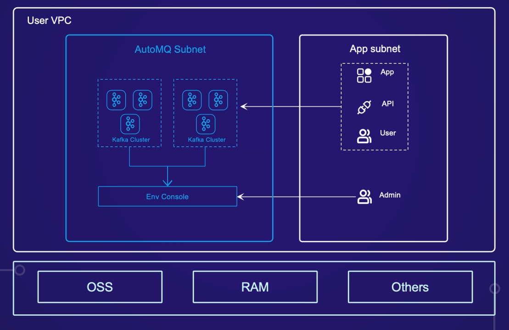

AutoMQ for Kafka BYOC 版是 AutoMQ 基于云原生基础设施重新设计实现的新一代 Kafka 商业发行软件，支持在公有云 VPC 私有网络环境中私有化安装和自主管理。
在保持和 Apache Kafka 100% 兼容前提下，AutoMQ 可以为用户提供 50%+ 的成本优势以及百倍的弹性优势，同时支持秒级分区迁移和流量自动重平衡，解决运维痛点。
AutoMQ for Kafka BYOC 版服务使用阿里云计算巢私有化部署方案，将 AutoMQ Kafka 软件部署到用户自定义的 VPC 和子网下，后续用户访问服务均位于自定义的私网内。
AutoMQ for Kafka 同时还提供了全托管服务形态的 SaaS 版，详情请参考 AutoMQ 官网。
AutoMQ for Kafka BYOC 版是将软件部署在用户账号下的机器资源上，因此用户使用 AutoMQ Kafka BYOC 版需要为以下资源付费：
云资源费用，用户直接向阿里云支付
底层付费云资源主要包括： - ECS 机器：AutoMQ Kafka 需要 ECS 部署控制台和 Kafka 集群数据节点。 - EBS 云盘：AutoMQ Kafka 需要少量的云盘存储服务端日志和基础元数据。 - OSS 存储：AutoMQ Kafka 使用 OSS 存储消息数据，因此会消耗 OSS 的存储空间和 API 调用。 - 公网费用（可选）：如果用户选择从公网访问控制台和服务，则可能会产生公网流量费用。
软件服务费，用户向 AutoMQ 服务方支付
AutoMQ Kafka 面向企业客户提供 BYOC 版商业服务，因此会根据用户集群的使用量按量收费，收取一定的软件服务费。关于计费详情请参考文档。
BYOC 版计费方式目前支持：
重要 AutoMQ Kafka BYOC 版仅对实际创建的集群进行收费，用户开通 Kafka 服务时不会计费，只有在 AutoMQ Kafka 控制台创建实例（集群）时才会真正按照集群的 AKU 规格进行计费。
目前AutoMQ Kafka BYOC 版支持在如下 ECS 规格下部署服务：
| 规格族 | vCPU与内存 | 系统盘 | 公网带宽 |
|---|---|---|---|
| ecs.r7.large | 内存型r7，2vCPU 16GiB | ESSD云盘 40GiB PL0 | 自定义按需 |
| ecs.r6.large | 内存型r6，2vCPU 16GiB | ESSD云盘 40GiB PL0 | 自定义按需 |
| ecs.u1-c1m8.large | 通用算力 u1，2vCPU 16GiB | ESSD云盘 40GiB PL0 | 自定义按需 |
如需更多规格、其他服务（如集群高可用性要求、企业级支持服务等），请 联系我们。

开通并使用 AutoMQ Kafka BYOC 版服务，需要操作云账号具备如下权限： 1. 创建授权策略、角色。 2. 开通云市场商品。 一般建议主账号或者具备管理权限的子账号进行操作。
AutoMQ Kafka BYOC 版依赖如下云产品，建议提前开通。 1. 弹性计算 ECS。 2. 对象存储 OSS。 4. PrivateZone。
在上述前置条件满足的情况下，开通 AutoMQ Kafka BYOC 版订阅服务。
开通服务后，请前往 AutoMQ BYOC 版文档中心 查看详细的使用流程和操作说明。
欢迎通过如下方式联系我们，了解更多信息。
💻 官网：https://www.automq.com
💻 文档中心：https://www.automq.com/docs
🌟GitHub：https://github.com/AutoMQ/automq
👀 B站：AutoMQ官方账号
🔍 微信二维码：